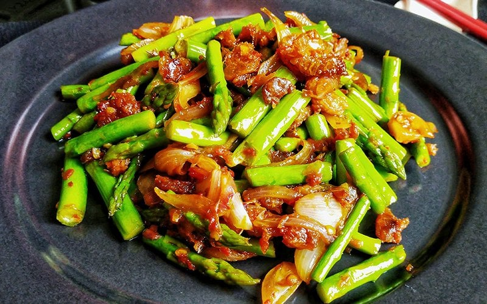

Vegetable Stir-Fry

Description
This colorful Vegetable Stir-Fry is quick, healthy, and packed with fresh vegetables and savory flavors.
Ingredients List
- 2 cups mixed vegetables (broccoli, bell peppers, carrots)
- 2 tablespoons soy sauce
- 1 tablespoon sesame oil
- 2 cloves garlic, minced
- 1 tablespoon ginger, minced
- Salt and pepper to taste
- Cooked rice for serving
Steps to Cook:
- Heat sesame oil in a large pan or wok over medium-high heat.
- Add minced garlic and ginger; stir-fry for about 30 seconds.
- Add mixed vegetables and stir-fry for 5-7 minutes until tender-crisp.
- Pour in soy sauce, and season with salt and pepper. Stir well.
- Serve hot over cooked rice.
Go to Homepage